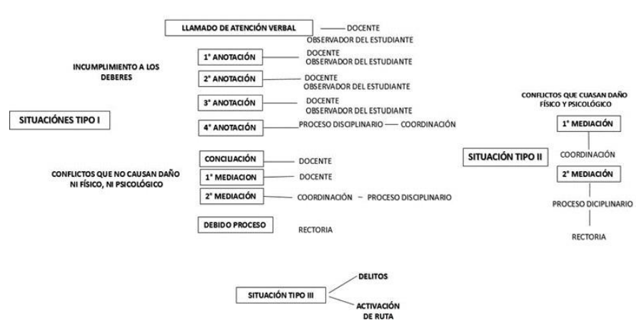

CAPITULO V
DERECHOS Y DEBERES DE LA COMUNIDAD EDUCATIVA
Artículo 1. DERECHOS DE LOS ESTUDIANTES
Son derechos de los estudiantes:
- Derecho a la vida, a una buena calidad de vida y a un ambiente sano en condiciones de dignidad.
- Derecho a la integridad personal: ser protegidos contra todas las acciones o conductas que causen muerte, daño o sufrimiento físico, sexual o sicológico.
- Derecho a la recreación, participación en la vida cultural y en las artes: los niños, las niñas y losadolescentes tienen derecho al descanso, esparcimiento, al juego y demás actividades recreativas propiasde su ciclo vital y a participar en la vida cultural y las artes.
- Derecho a la educación. Los niños, las niñas y los adolescentes tienen derecho a una educación de calidad.
- Derecho a la participación de los niños, las niñas y los adolescentes para el ejercicio de los derechos y las libertades
- Derecho al debido proceso: los niños, las niñas y los adolescentes tienen derecho a que se les apliquen las garantías del debido proceso en todas las actuaciones administrativas (en lo académico y comportamental) y judiciales en que se encuentren involucrados.
- Solicitar ante el defensor o comisario de familia o en su defecto ante el inspector de policía la protección de sus derechos.
- Expresar con libertad sus ideas, respetando las de sus compañeros y la filosofía de la Institución.
- Ser tratado y valorado con dignidad y respeto por todos los miembros de la comunidad educativa, sin ser discriminado por ningún motivo.
- Al respeto por la diferencia, en particular aquellas personas en situación de discapacidad y a disfrutar de una vida digna en condiciones de igualdad con las demás personas.
- Ser admitida (o) en la institución si cumple con los requisitos y si hay disponibilidad de cupo y a matricularse legalmente y a permanecer en ella para garantizar el derecho a la educación.
- Conocer y analizar los compromisos que asume con la Institución al momento de su ingreso, así como las normas estipuladas en el Manual de Convivencia, que debe acatar, respetar y difundir por su calidad de estudiante, así como de todas las normas y leyes en materia educativa.
- Recibir una formación integral de acuerdo con los fines de la educación colombiana y el PEI, con las características propias del entorno y con la axiología de la I.E. Jesús Rey que le permita ser agente de su propio desarrollo sin ningún tipo de discriminación por raza, sexo, creencias e ideologías.
- Ser motivado y estimulado para desarrollar competencias básicas, ciudadanas y laborales, habilidades comunicativas, pensamiento lógico-matemático e investigativo y a ponerlas al servicio de la comunidad.
- Recibir las horas de clase de cada área de acuerdo con la intensidad determinada en el Plan de Estudios y acordada por el Consejo Académico y aprobada por el Consejo Directivo.
- Ser orientados por profesionales de la educación idóneos, con responsabilidad pedagógica, actitud ética, mediante la presentación de actividades significativas y evaluación de procesos.
- Conocer el sistema institucional de evaluación de los estudiantes: criterios, procedimientos e instrumentos de evaluación y promoción desde el inicio de año escolar.
- Ser evaluado en forma equitativa y justa de acuerdo con las disposiciones legales del Decreto 1290 del 2009.
- Ser evaluado de manera integral en todos los aspectos académicos, personales y sociales.
- Solicitar respetuosamente y tramitar las inconformidades con relación a la información consignada en el observador y hoja de vida del estudiante.
- Ser evaluado en fecha posterior a la señalada en caso de inasistencia, mediante excusa escrita presentada dentro de los tres días hábiles siguientes.
- A ser informado durante la primera semana de cada periodo sobre las competencias, desempeños y evaluación de la unidad a desarrollar en dicho periodo.
- Conocer los resultados de los procesos de evaluación y recibir oportunamente las respuestas a las inquietudes y solicitudes presentadas respecto a estas.
- Recibir la asesoría y acompañamiento de los docentes para superar sus debilidades en el aprendizaje.
- Recibir de los docentes las explicaciones necesarias para resolver las dificultades presentadas en cada una de las áreas, asignaturas y proyectos pedagógicos.
- Recibir acompañamiento de los docentes y de la comunidad educativa para fortalecer su proyecto de vida personal y social.
- Recibir orientación, asignación y corrección de tareas, trabajos escritos, investigaciones, consultas y demás actividades requeridas en el proceso de aprendizaje.
- A que los docentes revisen, corrijan y devuelvan los trabajos entregados por los estudiantes. A más tardar una semana después de ser recibidos por el educador.
- Recibir los trabajos, informes, evidencias, evaluaciones académicas y demás actividades con las observaciones correspondientes, en un plazo oportuno.
- Recibir la información sobre los desempeños logrados, antes de que los docentes pasen las notas al sistema.
- Presentar sugerencias que tiendan a mejorar las competencias, desempeños, formas de evaluación en las distintas áreas o materias de cada plan de unidad.
- Presentar trabajos y sustentaciones de las recuperaciones en los momentos instituidos para ello.
- Participar en actividades complementarias y planes de apoyo organizadas por la Institución, cuando se requieran para la superación de las insuficiencias académicas.
- A tener acceso a la información consignada en la ficha de seguimiento y hoja de vida pudiendo acudir a instancias superiores en caso de inconformidad.
- Integrarse como miembro activo de los diferentes comités y organismos de participación de acuerdo con sus aptitudes e intereses, siempre y cuando no obstaculice el desarrollo del currículo.
- Participar en los actos culturales, cívicos, religiosos, recreativos y deportivos programados en la Institución.
- Utilizar los medios audiovisuales y los materiales didácticos y tecnológicos disponibles que favorezcan los logros académicos.
- Hacer uso de las nuevas tecnologías y otros elementos electrónico bajo su responsabilidad, exclusivamente en los descansos.
- Ser estimulados por sus méritos intelectuales, deportivos, culturales, investigativos, valores sociales, cívicos y morales.
- Asistir a eventos académicos, culturales y de prevención frente a riegos, que organice la institución.
- Hacer uso de los programas de psicología y apoyo pedagógico con que cuenta la Institución y/o que ofrece la Secretaría de Educación Municipal, si se encuentra en condiciones de discapacidad o está en situación de riesgo por abuso sexual, maltrato infantil, o drogadicción.
- Ser apoyados cuando tienen una Necesidad Educativa Especial o destacados cuando tienen un Talentos Excepcional e ingresar a programas especiales que vayan en beneficio propio.
- Elegir y ser elegidos libremente para los cargos de representación de los estudiantes en el Gobierno Escolar.
- Participar en diferentes actividades de bienestar estudiantil que promuevan el desarrollo de la sana personalidad y la proyección a la comunidad.
- Excusarse por escrito de no portar adecuadamente el debido uniforme de diario o de educación física, por causa de extrema necesidad, facilitando su identificación como estudiante de la Institución Educativa.
- Disfrutar de los servicios de la tienda escolar, restaurante y vaso de leche en las horas señaladas.
- Disfrutar de un descanso pedagógico apropiado, tranquilo, agradable y en sana convivencia.
- Asumir con responsabilidad su sexualidad y la de los demás.
- Ser respetado en la intimidad cuando se use la información personal que se tenga en la institución.
- Ser respetado en sus bienes y pertenencias.
- Utilizar el servicio de biblioteca como apoyo importante en el aprendizaje.
- Que se le responda oportunamente los reclamos, inquietudes, quejas y solicitudes por parte de los docentes, directivos docentes y personal administrativo.
- Aprovechar los programas que ofrece la Secretaría de Educación Municipal para evaluación de habilidades y talentos excepcionales e ingresar a programas especiales que vayan en beneficio propio.
- Contar con instalaciones y mobiliarios limpios, aseados y en buenas condiciones.
- Disfrutar de un ambiente sano, agradable, estético y descontaminado que facilite un adecuado proceso de aprendizaje, con un mínimo de contaminación visual y auditiva.
- Recibir información oportuna sobre la legislación nacional, regional municipal e institucional en lo referente a educación, derechos y deberes ciudadanos.
- Participar en grupos extraescolares con fines académicos culturales, artísticos, religiosos, deportivos y recreativos y representar a la Institución como integrante de cualquiera de estos grupos.
- Reiniciar por una sola vez el grado reprobado siempre y cuando existan condiciones de disponibilidad de cupo y amerite su comportamiento.
- Optar por el título de bachiller previo cumplimiento de los requisitos exigidos por la legislación vigente.
Artículo 2. DEBERES DE LOS ESTUDIANTES
En la I. E. Jesús Rey, se consideran deberes aquellas acciones, que como persona y como miembro de un grupo, los estudiantes deben desarrollar y practicar para contribuir a la convivencia, su ejercicio debe ser más consciente que mecánico. Son los siguientes:
Son deberes fundamentales de los estudiantes:
- Conservar y fomentar buenos modales y vocabulario adecuado.
- Llevar con dignidad y respetar los símbolos propios de la I. E: Bandera, Himno y Escudo.
- Hacer uso correcto de los servicios, implementos, materiales, textos, documentos e instrumentos de uso común y que son para beneficio de todos.
- Cuidar que el edificio, mobiliario, equipos, aulas de clase se mantengan en perfecto estado de conservación y aseo,
- Defender la Institución como lugar de formación integral.
- Hacer uso adecuado de los recipientes de aseo.
- Conservar el medio ambiente participando activamente en el proyecto ambiental escolar para fomentar un entorno sano en la institución.
- Conservar la salud como un bien personal, que se constituye y desarrolla con base en comportamientos que imponen un cuidado físico y psicológico de sí mismo y de los otros, expresando de esta forma el amor a la vida.
- Conocer la estructura organizacional de la Institución, identificando los diferentes órganos de gobierno escolar y sus respectivas funciones.
- Moderar las expresiones de tipo afectivo que correspondan a la intimidad de la pareja.
- Demostrar respeto y responsabilidad en todos los compromisos que adquiere como estudiante.
- Hacer uso adecuado de todas las dependencias de la Institución, acatando el reglamento de cada una de ellas.
- Mantener y conservar el turno en las filas, respetar y ordenar los distintos lugares de trabajo y servicio de la institución.
- Portar el uniforme tanto de diario como el de educación física de acuerdo con las pautas de presentación de la Institución y de acuerdo al horario correspondiente.
- Emplear con moderación el maquillaje facial procurando la sobriedad y adecuándose a las normas de la Institución.
- Permanecer dentro de la I.E. el tiempo correspondiente al horario de la jornada en la cual está, incluyendo la contra jornada. Ningún estudiante deberá permanecer en la Institución sin previa autorización de Rectoría o Coordinación.
- Los estudiantes que lleguen tarde a la Institución deben presentarse a la coordinación de convivencia con la excusa correspondiente y luego ingresar al salón de clase.
- Cuando el estudiante falte, debe presentar la excusa firmada por sus padres o acudientes, en la coordinación de convivencia para su verificación y firma, el día que se reintegre y presentarla a cada profesor para programar el cumplimiento de las actividades pendientes.
- Ponerse al día en todos los temas, trabajos, cuadernos, actividades y/o tareas, una vez se reintegre a la Institución, en caso de inasistencia a clases por cualquier motivo.
- Cumplir, traer y utilizar adecuadamente los materiales e implementos necesarios para el trabajo escolar.
- Estar a paz y salvo con préstamos de biblioteca y papelería que solicite en la institución.
- Entregar oportunamente, en su casa, las circulares, citaciones, comunicaciones educativas, y demás información que la institución entregue.
- Hacer uso del servicio de la fotocopiadora en el horario establecido para ello: durante el descanso pedagógico o al finalizar la jornada.
- Cumplir a cabalidad con los deberes académicos establecidos por la Institución como trabajos y tareas realizados en casa y/o el colegio, jornadas de estudio, aclarar inquietudes oportunamente, presentándolos en la hora y fecha señalada.
- Mantener una actitud activa y participativa dentro de clase y demás actividades programadas.
- Ser responsable con el horario establecido: llegada, salida, actividades en general, si el estudiante requiere ausentarse del aula de clase, deberá solicitar autorización del educador responsable o si es de la institución, autorización escrita del Coordinador.
- Traer justificación por escrito, ante la ausencia a la jornada escolar o los retardos a las actividades pedagógicas programadas como: actos cívico- culturales, jornadas deportivas, Eucaristías, convivencias, salidas pedagógicas, entre otras.
- Abstenerse del uso de objetos y joyas costosas. La Institución no se hace responsable de la pérdida de estos objetos.
- Portar el uniforme de manera ordenada y limpia. Igualmente, debe presentarse a las diferentes actividades en condiciones adecuadas de higiene y organización personal según las exigencias institucionales.
- Velar por el cuidado de sus implementos electrónicos como celulares, IPod, portátiles, tabletas, USB, Mp4, juegos de video, audífonos, revistas y sólo los podrán usar durante el descanso pedagógico, el resto del tiempo deben permanecer apagados y guardados en el bolso o en el morral. La Institución no se hace responsable por la pérdida de estos aparatos.
- Optimizar el uso de la Web como herramienta que contribuye a obtener información pertinente para el trabajo escolar y que aporte a su desempeño integral.
- Respetar y valorar el trabajo de los empleados de servicios generales y oficinas.
- Mantener un comportamiento adecuado cuando el docente se ausente de clase, igual que cuando él esté presente.
- Dejar ordenados y limpios los salones y otros espacios que utilice durante sus actividades escolares.
- Denunciar cualquier acto que atente contra el buen nombre de las personas y de la institución
- Ser receptivo en el acompañamiento de los docentes en el proceso de formación y en la construcción del proyecto de vida personal.
- Durante el descanso los estudiantes no deben permanecer en los salones, sin autorización del docente.
- Acatar las orientaciones y correctivos pedagógicos recibidos en la Institución.
- Evitar participar en juegos de azar dentro de la Institución, que no tengan intencionalidad pedagógica y que no estén previamente autorizados.
- Utilizar adecuadamente los servicios de Bienestar estudiantil (biblioteca, restaurante, audiovisuales, computadores, implementos deportivos entre otros).
- Ingresar y salir del plantel en correcto orden.
- Presentar autorización para el ingreso a la sala de docentes, demás dependencias administrativas de la institución y diferentes salones al que le corresponda según el horario.
- Comprar y consumir alimentos en la tienda, únicamente en horas de descanso o cuando sea autorizado.
- Cuidar los elementos fijados institucionalmente para la comunicación interna, tales como: avisos, carteles, pendones carteleras, mensajes o informes entre otros.
- Mostrar respeto por plantas, animales o sectores aledaños a la Institución, procurando no lanzar piedras, basuras u otros objetos.
- Depositar residuos sólidos y líquidos en las canecas dispuestas para tal fin.
- Permitir el normal desarrollo de las actividades académicas, actos cívicos, culturales, evitando gritos, silbidos, expresiones a destiempo y burlas hacia los compañeros o docentes.
- Hacer buen uso de las vías de evacuación.
- Cuidar la integridad personal, evitando subirse a marcos de tableros, muros, pasamanos, ventanas, columnas, vigas de las canchas, árboles, techos del plantel o sector del tanque de agua.
- Hacer buen uso del agua e instalaciones eléctricas.
- Acudir a las actividades programadas sin mascotas ni personas ajenas a la institución, exceptuando aquellas que hayan sido citadas.
- Guardar reserva ante información confidencial tratada en reunión de un Comité o Consejo.
- Responder por sus actos, evitando suplantar o buscar quien suplante el acudiente.
- Devolver oportunamente y en el estado en que me fue entregado libros, material de estudio o cualquier otro objeto que se le haya entregado en calidad de préstamo
- Acatar normas e instrucciones, observaciones o recomendaciones de educadores y directivos de la institución.
Parágrafo 1. La Institución Educativa Jesús Rey no se hace responsable por la pérdida de objetos de valor tales como: celulares, Mp3, Mp4, IPod y demás aparatos electrónicos o similares. Tampoco responde por la pérdida de dinero o joyas que porten los estudiantes. La responsabilidad recae directamente en quien los porte o su propietario.
Artículo 3. DERECHOS DE LOS PADRES DE FAMILIA Y/O ACUDIENTE
- Elegir el tipo de educación que, de acuerdo con sus convicciones, procure el desarrollo integral de los hijos, de conformidad con la Constitución y la Ley.
- Recibir información del Estado sobre los establecimientos educativos que se encuentran debidamente autorizados para prestar el servicio educativo.
- Conocer con anticipación o en el momento de la matrícula las características del establecimiento educativo, los principios que orientan el proyecto educativo institucional, el manual de convivencia, el plan de estudios, las estrategias pedagógicas básicas, el sistema de evaluación escolar y el plan de mejoramiento institucional.
- Expresar de manera respetuosa y por conducto regular sus opiniones respecto del proceso educativo de sus hijos, y sobre el grado de idoneidad del personal docente y directivo de la institución educativa.
- Participar en el proceso educativo que desarrolle el establecimiento en que están matriculados sus hijos y, de manera especial, en la construcción, ejecución y modificación del proyecto educativo institucional.
- Recibir respuesta suficiente y oportuna a sus requerimientos sobre la marcha del establecimiento y sobre los asuntos que afecten particularmente el proceso educativo de sus hijos.
- Recibir durante el año escolar y en forma periódica, información sobre el rendimiento académico y el comportamiento de sus hijos.
- Conocer la información sobre los resultados de la pruebas de evaluación de la calidad del servicio educativo y, en particular, del establecimiento en que se encuentran matriculados sus hijos.
- Elegir y ser elegido para representar a los padres de familia en los órganos de gobierno escolar y ante las autoridades públicas, en los términos previstos en la Ley General de Educación y en sus reglamentos.
- Ejercer el derecho de asociación con el propósito de mejorar los procesos educativos, la capacitación de los padres en los asuntos que atañen a la mejor educación y el desarrollo armónico de sus hijos.
- Conocer el sistema institucional de evaluación de los estudiantes: criterios, procedimientos e instrumentos de evaluación y promoción desde el inicio de año escolar.
- Recibir los informes periódicos de evaluación.
- Recibir oportunamente respuestas a las inquietudes y solicitudes presentadas sobre el proceso de evaluación de sus hijos.
- A ser respetado en sus derechos fundamentales.
- Conocer oportunamente el Manual de Convivencia de la Institución.
- Hacer peticiones respetuosas a los directivos y docentes por motivo de interés general o particular.
- Recibir orientaciones y capacitaciones organizadas por la Institución.
- Conocer los acuerdos del Gobierno Escolar.
- Ser informado sobre los diferentes aspectos de la vida institucional y sus planes de mejoramiento.
- Retirar de la jornada escolar de la Institución a su acudido por motivos de salud, calamidad doméstica o por razones de otra índole.
- Delegar por escrito y con firma, la responsabilidad como acudiente, cuando no pueda asumirla, a un familiar o a terceros, mayores de edad, siempre y cuando no sea continua y permanente.
- Escolarizar a sus hijos o acudidos.
- Ser atendidos en los horarios establecidos para ello.
- Solicitar certificados, constancias e informes de su acudido de acuerdo con las normas vigentes.
Artículo 4. DEBERES DE LOS PADRES DE FAMILIA Y/O ACUDIENTE
- Matricular oportunamente a sus hijos en establecimientos educativos debidamente reconocidos por el Estado y asegurar su permanencia durante su edad escolar obligatoria.
- Conocer el Manual de Convivencia y velar que el acudido asuma con responsabilidad lo contemplado en el mismo.
- Contribuir para que el servicio educativo sea armónico con el ejercicio del derecho a la educación y en cumplimiento de sus fines sociales y legales.
- Cumplir con las obligaciones contraídas en el acto de matrícula y en el manual de convivencia, para facilitar el proceso de educativo.
- Seguir las recomendaciones de los docentes, personal de apoyo de la institución y profesionales externos (incluyendo tratamientos y uso de medicación) cuando su hijo presente algún diagnóstico clínico.
- Contribuir en la construcción de un clima de respeto, tolerancia y responsabilidad mutua que favorezca la educación de los hijos y la mejor relación entre los miembros de la comunidad educativa.
- Comunicar oportunamente, y en primer lugar a las autoridades del establecimiento educativo, las irregularidades de que tengan conocimiento, entre otras, en relación con el maltrato infantil, abuso sexual, tráfico, consumo de drogas ilícitas o discriminación. En caso de no recibir pronta respuesta acudir a las autoridades competentes.
- Apoyar al establecimiento en el desarrollo de las acciones que conduzcan al mejoramiento del servicio educativo y que eleven la calidad de los aprendizajes, especialmente en la formulación y desarrollo de los planes de mejoramiento institucional.
- Aportar y actualizar la información para la historia escolar del estudiante. La cual debe solicitar al trasladarse o retirarse de la Institución educativa.
- Acompañar el proceso educativo en cumplimiento de su responsabilidad como primeros educadores de sus hijos, para mejorar la orientación personal y el desarrollo de los valores ciudadanos.
- Participar en el proceso de autoevaluación anual del establecimiento educativo.
- Participar, a través de las instancias del gobierno escolar, en la definición de criterios y procedimientos de la evaluación del aprendizaje de los estudiantes y promoción escolar
- Realizar seguimiento permanente al proceso evaluativo de sus hijos
- Acompañar de forma permanente y activa a sus hijos en el proceso pedagógico que adelante el establecimiento educativo para la convivencia y la sexualidad.
- Participar en la revisión y ajuste del manual de convivencia a través de las instancias de participación definidas en el proyecto educativo institucional del establecimiento educativo.
- Asumir responsabilidades en actividades para el aprovechamiento del tiempo libre de sus hijos para el desarrollo de competencias ciudadanas.
- Hacer respetar sus derechos fundamentales y respetar los de los demás.
- Seguir el conducto regular respetuosamente.
- Asistir puntualmente a las diferentes reuniones y capacitaciones citados por los representantes de los diferentes estamentos de la Institución o presentar la excusa de su inasistencia el día inmediatamente posterior al encuentro.
- Velar por el cumplimiento de los acuerdos emanados del Gobierno Escolar, incluyendo las actas de acuerdo del PIAR.
- Servir de apoyo a la Institución en los planes de mejoramiento y procurar que su acudido lo cumpla.
- Informar por escrito cuando sus acudidos necesiten ausentarse por justa razón, antes de finalizar la jornada correspondiente, y venir por ellos o autorizar por escrito su salida.
Parágrafo 1. Según la clasificación de la situación, el estudiante y su acudiente deberán presentarse ante el estamento indicado por este Manual.
Parágrafo 2. El padre y/o acudiente, deberá ser requerido por escrito mediante citación enviada con el estudiante en el formato FO-B-03. En caso de imposibilidad de la asistencia del acudiente, éste deberá excusarse por escrito (con firma y número de cédula) solicitando fecha y hora en la cual le sea posible acudir a la institución a la mayor brevedad posible.
Parágrafo 3. El estudiante contará con tres (3) días hábiles a partir de la fecha en que se haya citado al padre de familia y/o acudiente para la notificación, teniendo en cuenta las consideraciones expuestas en el parágrafo anterior.
Parágrafo 4. Si luego de solicitada o concertada la presencia del acudiente, hasta por segunda vez, éste no asiste a la cita, sin excusa justificable, el análisis comportamental podrá seguir su curso sin considerarse por ello, violatorio el Debido Proceso, quedando constancia del hecho con firma de dos testigos. Se enviará copia de lo anterior al defensor de familia.
Parágrafo 5. Cuando el comité escolar de convivencia, adopte como acciones o medidas la remisiónde la situación al Instituto Colombiano de Bienestar Familiar, para el restablecimiento de derechos, o al Sistema de Seguridad Social para la atención en salud integral, estas entidades cumplirán con lo dispuesto en el artículo 45 del Decreto 1965 de 2013.
Parágrafo 6: Todos los daños y perjuicios ocasionados por un estudiante en muebles, enseres o equipos de la institución, será asumido de manera solidaria por su representante legal o acudiente.
Artículo 5. DERECHOS DE LOS DOCENTES Y DIRECTIVOS DOCENTES
- Formar asociaciones sindicales con capacidad legal para representar a sus afiliados en la formulación de reclamos y solicitudes ante las autoridades del orden nacional y seccional.
- Recibir oportunamente la remuneración asignada para el respectivo cargo y grado del escalafón.
- Ascender dentro de la carrera docente de acuerdo al régimen que le corresponda (2277 o 1278)
- Participar en los programas de capacitación y bienestar social y gozar de los estímulos de carácter profesional y económico que se establezcan.
- Disfrutar de vacaciones remuneradas.
- Obtener el reconocimiento y pago de las prestaciones sociales de ley.
- Solicitar y obtener los permisos, licencias y comisiones, de acuerdo con las disposiciones legales pertinentes.
- Permanecer en el servicio y no ser desvinculado o sancionado, sino de acuerdo con las normas y procedimientos que se establecen en el presente decreto y en el Código Único Disciplinario, Ley 734 de 2002.
- No ser discriminado por razón de sus creencias políticas o religiosas ni por distinciones fundadas en condiciones sociales o raciales
- Ser estimulados para la superación y eficiencia mediante un sistema de remuneración acorde con su formación académica y desempeño, de acuerdo con lo dispuesto en este decreto.
- Participar en el gobierno escolar directamente o por medio de sus representantes en los órganos escolares.
- Disfrutar de las licencias por enfermedad y maternidad de acuerdo con el régimen de seguridad social vigente.
Además de los contemplados en la Constitución, en la ley, en el Código Disciplinario Único y en los reglamentos vigentes, para todos los servidores públicos, los docentes y directivos docentes al servicio del Estado.
A nivel Institucional:
- Recibir un trato respetuoso por parte de todos los miembros de la Comunidad Educativa.
- Conocer oportunamente las funciones inherentes a su cargo.
- A que se le respete el debido proceso en lo relacionado con sus funciones y sus compromisos, en caso de seguimiento disciplinario y/o administrativo.
- Ser informado sobre los diferentes aspectos de la vida institucional y sus planes de mejoramiento.
- Ser estimulado por su compromiso y sentido de pertenencia con la Institución
- Socializar en la institución, experiencias significativas que contribuyan al mejoramiento de la calidad educativa, en el marco de la educación inclusiva.
- A que se le brinden espacios de capacitación que mejoren la prestación del servicio.
Artículo 6. DEBERES DE LOS DOCENTES Y DIRECTIVOS DOCENTES
- Cumplir la constitución y las leyes de Colombia:
- Desempeñar con solicitud y eficiencia las funciones de su cargo.
- Cumplir las órdenes inherentes a su cargo que les impartan sus superiores jerárquicos;
- Dar un trato cortés a sus compañeros y a sus subordinados y compartir sus tareas con espíritu de solidaridad y unidad de propósito;
- Velar por la conservación de documentos, útiles, equipos, muebles y bienes que le sean confiados;
- Observar una conducta pública acorde con el decoro y la dignidad del cargo;
- Buscar de manera permanente el incremento de la calidad del proceso de enseñanza-aprendizaje y sus resultados, mediante la actualización académica, investigación, la innovación y el mejoramiento continuo, de acuerdo con el plan de desarrollo educativo de los entes nacionales, territorial y del Proyecto Educativo Institucional del establecimiento.
- Cumplir con el calendario, la jornada escolar y la jornada laboral, de acuerdo con la reglamentación que expida el Gobierno Nacional.
- Educar a los alumnos en los principios democráticos y en el respeto a la ley y a las instituciones, e inculcar el respeto a la diversidad a los valores institucionales, históricos y culturales del territorio y la Nación.
- Observar una conducta acorde con la función educativa y con los fines, objetivos, derechos, principios y criterios establecidos en la ley general de educación y en los planes educativos.
- Mantener relaciones cordiales con los padres, acudientes, alumnos y compañeros de trabajo, promoviendo una firme vinculación y una cooperación vital entre la escuela y la comunidad y respetar a las autoridades educativas.
Además de los deberes establecidos en la Constitución y la ley, y en especial en el Código Disciplinario Único, para los servidores públicos, son deberes de los docentes y directivos docentes
A nivel institucional:
- Mantener relaciones respetuosas con todos los miembros de la Comunidad Educativa.
- Cumplir responsablemente las funciones inherentes a su cargo.
- Respetar el debido proceso (suyo y el de los demás) en lo relacionado a sus funciones y sus compromisos, aportando pruebas en los descargos, dentro del debido proceso, las cuales puedan ser verificadas.
- Servir de apoyo a la Institución en los planes de mejoramiento
- Realizar un diagnóstico inicial de sus estudiantes para ajustar la propuesta educativa a sus características particulares, aplicando ajustes razonables y PIAR según sean requeridos.
CAPÍTULO VI
SITUACIONES DE LOS ESTUDIANTES QUE AFECTAN LA CONVIVENCIA.
Se consideran situaciones que afectan la convivencia, todos aquellos actos, actitudes o comportamientos que obstaculizan de algún modo el cabal desarrollo de las actividades curriculares y extracurriculares de laInstitución Educativa Jesús Rey y que lesionan de alguna forma a las personas o a la Institución. También el incumplimiento de los deberes constituye una situación que afecta la convivencia.
Clasificación de las Situaciones que Afectan la Convivencia.
Las situaciones que afectan la convivencia escolar y el ejercicio de los derechos humanos, sexuales y reproductivos, se clasifican en tres tipos:
Artículo 1: SITUACIONES TIPO I
Se considera situación tipo I, toda práctica u omisión violatoria de los deberes de los estudiantes, que expresamente no esté clasificada como situaciones tipo II y III.
Corresponden a este tipo, los conflictos manejados inadecuadamente y aquellas situaciones esporádicas que inciden negativamente en el clima escolar, y que en ningún caso generan daños al cuerpo o a la salud física o mental.
Cuando los conflictos no son resueltos de manera constructiva, pueden dar lugar a hechos que afectan la convivencia escolar como altercados, enfrentamientos o riñas entre dos o más personas de la comunidad educativa. Estas situaciones se pueden presentar en el desarrollo cotidiano de las actividades del aula, en las horas de descanso, en las reuniones, entre otros.
Las situaciones tipo I deben ser atendidas por los docentes de manera inmediata para evitar que escalen. Las personas que conforman la comunidad educativa son los llamados a apoyar la intervención de las diferentes situaciones tipo I que se presenten.
Son situaciones tipo I, las siguientes:
- Agresión física y/o verbal a cualquier miembro de la institución dentro o fuera de la misma sin causar daño.
- Conversar o emitir gritos, interrumpiendo las clases y demás actividades académicas.
- Desacatar las orientaciones y correctivos pedagógicos recibidos en la institución.
- Hacer desorden a la entrada o salida del plantel.
- Comprar en la tienda en horas de clase o en actos comunitarios, sin autorización.
- Deteriorar elementos fijados institucionalmente para la comunicación interna, tales como: avisos, carteles, pendones, carteleras, mensajes o informes entre otros.
- Tirar piedras, basuras u otros objetos a las plantas, animales o a los sectores aledaños a la institución.
- Vender o comprar artículos a personas diferentes a las autorizadas por rectoría.
- Negligencia en la presentación de citaciones o cualquier información al padre de familia o acudiente autorizado, para asistir a reuniones o llamados de atención.
- Usar apodos o burlarse de cualquier miembro de la comunidad educativa.
- Rayar, escribir, escupir, manchar o pintar en pupitres, sillas, paredes, pisos, puertas, carteleras u otros espacios de la institución.
- Obstaculizar el normal desarrollo de las actividades académicas, actos cívicos, culturales, con gritos, silbidos, expresiones a destiempo.
- Esconder o arrojar maletas, morrales, enseres y objetos personales de sus compañeros o docentes.
- Indisponer el núcleo familiar y escolar con información distorsionada mediante comentarios o escritos a través de cualquier medio.
- El incumplimiento a las medidas correctivas y/o pedagógicas que ya se habían acordado.
- Tratar con descortesía o emplear vocabulario soez para dirigirse a cualquier miembro de la comunidad educativa.
- Presionar a otros, discriminarlos o excluirlos.
- Divulgar información confidencial tratada en reunión de un Comité o Consejo.
- Manifestar comportamientos obscenos con integrantes de la comunidad educativa o con cualquier persona.
- Suplantar o buscar quien suplante al acudiente.
- Hacerse suplantar o suplantar a un compañero.
- Participar en juegos bruscos.
- Celebrar inadecuadamente cualquier evento, mediante bromas pesadas o el lanzamiento de harina, huevos, agua y otros elementos.
- Rebelarse y/o mostrar desacato frente a la norma e instrucciones, observaciones o recomendaciones de educadores y directivos de la institución.
- Tomar objetos de oficinas, aulas y otras dependencias sin autorización.
- Utilizar sustancias que afecten la salud y el ambiente escolar como pica-pica, pimienta, polvo químico o cualquier otro.
1.1. Protocolo de atención para situaciones tipo I
Este protocolo se activará por los docentes con intervenciones pedagógicas, entendidas éstas, como las acciones correctivas que tienen la intención de disminuir los procesos disciplinarios, mediante la persuasión; mejorando la convivencia, como parte formativa para lograr la educación integral.
1.1.1. Llamado de atención verbal para invitar al estudiante a reflexionar sobre la acción. Tanto para los conflictos menores, como para el incumplimiento a los deberes.
1.1.2. Llamado de atención por escrito. El docente registra la situación dejando claro la fecha en la que se hizo el llamado de atención verbal. En el caso de un conflicto menor, se realiza de manera inmediata una conciliación y se deja constancia en el observador. Si se trata del incumplimiento a los deberes se hace la intervención pedagógica y se deja constancia en el observador.
1.1.3. Cuando el estudiante tenga tres observaciones registradas en el observador por situaciones tipo I, se cita por escrito a padres y/o acudientes en el formato FO-B-03, por parte del docente para pactar correctivo pedagógico.
1.1.4. Una vez agotados los pasos 1, 2 y 3 y el estudiante incurre en una situación tipo 1, el docente que registre la cuarta anotación, notifica a la coordinación, para que allí se realice el reporte a rectoría, para dar inicio al proceso disciplinario.
1.1.5. Cuando dos o más conciliaciones por conflictos menores no producen el cambio que se requiere en el estudiante, se procede a la mediación con las partes y sus padres de familia y/o acudientes.
Dos mediaciones evidencian el incumplimiento de los compromisos, por consiguiente se inicia proceso disciplinario.
1.1.6. El proceso disciplinario tanto para el incumplimiento de los deberes como para los conflictos menores, termina con un acto administrativo, resolución rectoral, que sanciona la situación con 1 a 2 días de suspensión, dicha decisión puede ser apelada interponiendo los recursos de Ley. Una vez se resuelvan los recursos interpuestos queda la resolución rectoral en firme.
En el caso que diere lugar, a cursar un segundo proceso disciplinario, se sancionará hasta con 3 días de suspensión, con actividades pedagógicas de mejoramiento personal.
1.2. Protocolo de atención para el proceso de conciliación
1.2.1. Reunir inmediatamente a las partes involucradas en el conflicto menor y conciliar de manera pedagógica para que éstas expongan sus puntos de vista y busquen la reparación de los daños causados, el restablecimiento de los derechos y la reconciliación, dentro de un clima de relaciones constructivas en el establecimiento educativo.
12.2. Fijar la forma de solución de manera imparcial, equitativa y justa, encaminada a buscar la reparación de los daños causados, el restablecimiento de los derechos y la reconciliación dentro de un clima de relaciones constructivas en las partes involucradas o en el establecimiento educativo. De esta actuación se dejará constancia en el observador.
Parágrafo 1. Los estudiantes que hayan sido capacitados como mediadores o conciliadores escolares, podrán participar en el manejo de estos casos en los términos fijados en el Manual de Convivencia.
Parágrafo 2. Todos los casos reportados por situaciones Tipo I, son revisados por el coordinador, quien presenta un informe detallado al comité de convivencia, verificando el desarrollo del debido proceso, la activación de rutas y de protocolos pertinentes en cada caso, como también los resultados satisfactorios y/o los que prevalecen sin la superación de las dificultades, tomando como referente los acuerdos pactados, en las intervenciones pedagógicas, las conciliaciones y las mediaciones.
Artículo 2. SITUACIONES TIPO II
Se considera situación tipo II, cualquier acción, aún por primera vez, que lesione la armonía escolar, los derechos de las personas y/o los bienes de la institución y la comunidad educativa. Corresponden a este tipo las situaciones de agresión escolar, acoso escolar (bullying) y ciber acoso (Ciberbullying), que no revistan las características de la comisión de un delito y que cumplan con cualquiera de las siguientes características:
-Que se presenten de manera repetida o sistemática.
-Que causen daños al cuerpo o a la salud sin generar incapacidad alguna, para cualquiera de los involucrados.
Para la atención de estas situaciones se requiere la actuación de la coordinación de convivencia, del comité de convivencia y la rectoría, y en algunos casos de otras entidades, por ejemplo, en casos de afectación al cuerpo o a la salud física o mental de las personas involucradas o cuando sean necesarias medidas de restablecimiento de derechos.
Son situaciones tipo II, las siguientes:
- Agresión física y/o verbal a cualquier miembro de la institución dentro o fuera de la misma causando daño.
- Pertenecer a organizaciones, comunidades virtuales, redes sociales, sectas o grupos que directamente, o a través de terceros, amenacen o agredan de palabra o de hecho, a personas o grupos dentro o fuera de la institución.
- Atentar contra la dignidad humana.
- Cualquier tipo de intimidación o agresión por cibermedios, dentro o fuera de la institución.
- Amenazar de palabra o de hecho a cualquier miembro de la comunidad educativa.
- Capturar y publicar fotos y/o videos que atenten contra la honra y la dignidad de las personas.
- Publicar fotografías propias o ajenas modelando posturas denigrantes o pornográficas.
- Provocar o ejercer el bullying hacia cualquier miembro de la institución.
Parágrafo 1. La Institución Educativa Jesús Rey no se hace responsable por la pérdida de objetos de valor tales como: celulares, Mp3, Mp4, IPod y demás aparatos electrónicos o similares. Tampoco responde por la pérdida de dinero o joyas que porten los estudiantes. La responsabilidad recae directamente en quien los porte o su propietario.
Parágrafo 2. Todos los casos reportados por situaciones Tipo II, son revisados por el coordinador, quien presenta un informe detallado al comité de convivencia, verificando el desarrollo del debido proceso, la activación de rutas y de protocolos pertinentes en cada caso, como también los resultados satisfactorios y/o los que prevalecen sin la superación de las dificultades, tomando como referente los acuerdos pactados, en las intervenciones pedagógicas, las conciliaciones y las mediaciones.
2.1. Protocolo de atención para situaciones tipo II
2.1.1 Informar de manera inmediata a los padres, madres y/o acudientes de todos los estudiantes involucrados. Actuación de la cual se deja constancia.
2.1.2. En casos de daño al cuerpo o a la salud, garantizar la atención inmediata en salud física y mental de los involucrados, mediante la remisión a las entidades competentes, actuación de la cual se dejará constancia en acta.
2.1.3. Cuando se requieran medidas de restablecimiento de derechos, remitir la situación a las autoridades administrativas, en el marco de la Ley 1098 de 2006, actuación de la cual se dejará constancia.
2.1.4. Adoptar las medidas para proteger a los involucrados en la situación de posibles acciones en su contra, actuación de la cual se dejará constancia.
2.1.5. Generar espacios en los que las partes involucradas y los padres, madres y/o acudientes de los estudiantes, puedan exponer y precisar lo acontecido. Preservando en cualquier caso, el derecho a la intimidad, confidencialidad y demás derechos.
2.1.6 Determinar las acciones restaurativas que busquen la reparación de los daños causados, el restablecimiento de los derechos y la reconciliación dentro de un clima de relaciones constructivas en el establecimiento educativo; así como las consecuencias aplicables a quienes han promovido, contribuido o participado en la situación reportada.
2.1.7 El presidente del comité escolar de convivencia, informará a los demás integrantes de este comité, sobre la situación ocurrida y las medidas adoptadas. El comité realizará el análisis y seguimiento, a fin de verificar si la solución fue efectiva o si se requiere acudir al protocolo consagrado en el artículo 44 del Decreto 1965 de 2013.
2.1.8 El comité escolar de convivencia dejará constancia en acta de todo lo ocurrido y de las decisiones adoptadas, la cual será suscrita por todos los integrantes e intervinientes.
De acuerdo con la ruta descrita anteriormente la coordinación iniciará el protocolo de la siguiente manera:
- Primera vez que incurre en situaciones tipo II: se efectúa una mediación en la coordinación; con el fin de mejorar las relaciones entre las partes; además de garantizar la restitución de los derechos y la restauración de los daños y perjuicios, además, se impone un correctivo pedagógico dejando constancia escrita de la actuación.
- Segunda vez que incurre en situaciones tipo II: se efectúa la mediación por parte del coordinador, con el fin de mejorar las relaciones entre las partes; además de garantizar la restitución de los derechos y la restauración de los daños y perjuicios y se envía constancia escrita de la actuación a rectoría para inicio de proceso disciplinario, que termina con un acto administrativo, resolución rectoral, que sanciona la situación con 1 a 2 días de suspensión, dicha decisión puede ser apelada interponiendo los recursos de Ley. Una vez se resuelvan los recursos interpuestos queda la resolución rectoral en firme.
- Tercera vez que incurre en situaciones tipo II: se efectúa una mediación por parte del coordinador con el fin de mejorar las relaciones entre las partes; además de garantizar la restitución de los derechos y la restauración de los daños y perjuicios, además, se impone un correctivo pedagógico dejando constancia escrita de la actuación.
- Cuarta vez que incurre en situaciones tipo II: se efectúa una mediación por parte del coordinador con el fin de mejorar las relaciones entre las partes; además de garantizar la restitución de los derechos y la restauración de los daños y perjuicios y se envía constancia escrita de la actuación a rectoría para inicio de segundo proceso disciplinario, que sanciona la situación con hasta 3 días de suspensión, dicha decisión puede ser apelada interponiendo los recursos de Ley. Una vez se resuelvan los recursos interpuestos queda la resolución rectoral en firme.
2.2. Circunstancias atenuantes
Se consideran como circunstancias que atenúan la responsabilidad del estudiante de una situación tipo II las siguientes:
- La circunstancialidad: tiempo, modo y lugar en que se cometió la situación.
- Voluntad de enmienda y de reparación de daños.
- Disposición para conciliar en el conflicto.
- La edad mental y el desarrollo psicosocial, las circunstancias personales y familiares del niño, niña o adolescente.
- Haber obrado por motivos nobles o altruistas.
- Haber observado un buen comportamiento anteriormente.
- Aceptar o confesar la situación antes de iniciar el proceso disciplinario.
- Afección sicológica comprobada siempre y cuando la familia y el estudiante se comprometan con un proceso de intervención profesional fuera de la institución.
- Haber sido inducido a cometer la situación por alguien de mayor edad y/o madurez psicológica.
- Cometer una situación tipo II en estado de alteración, motivado por circunstancias que le causan dolor físico o psíquico.
- Procurar, a iniciativa propia, resarcir el daño o compensar el perjuicio causado, antes de iniciarse el proceso disciplinario.
Parágrafo 1. Los estudiantes con discapacidad, capacidades y talentos excepcionales, con diagnóstico tanto presuntivo como clínico, tienen derecho a un tratamiento especial, teniendo en cuenta su condición para la aplicabilidad de la acción pedagógica, los correctivos y procesos disciplinarios.
2.3. Circunstancias agravantes
- El grado de perturbación que la conducta produzca en la comunidad educativa.
- Reincidencia en la comisión de la situación.
- La circunstancialidad: tiempo, modo y lugar en que se cometió la situación.
- Grado de afectación del buen nombre e imagen de la institución.
- Premeditación o planeación para cometer la situación.
- Cometer la situación para ocultar o cometer otra.
- Haber mentido en forma oral o escrita en los descargos para justificar la situación.
- Realizar el acto con pleno conocimiento de sus efectos dañinos.
- Cometer la situación con la complicidad o participación de menores o subalternos inducidos a ello.
- No admitir la responsabilidad o atribuírsela a otros.
- Cometer la situación aprovechando condiciones de inferioridad de otras personas.
Artículo 3. SITUACIONES TIPO III
Se considera situación tipo III, cualquier acto que atente contra los derechos fundamentales, consagrados en la Constitución Nacional (Artículos 11 al 40) y aquel que esté tipificado como delito por el Código Penal, así como las agresiones escolares que sean constitutivas de presuntos delitos contra la libertad, integridad y la sexualidad, referidos en el Título IV del Libro 11 de la Ley 599 de 2000.
Estas situaciones requieren que la atención sea brindada por entidades externas al establecimiento educativo (por ejemplo, Policía de Infancia y Adolescencia, ICBF, sector salud, entre otras).
Son situaciones tipo III, las siguientes:
- Atentar contra el derecho a la vida, a la integridad personal o a la dignidad humana de cualquiera de los miembros de la institución.
- Sostener riñas que generen lesiones personales.
- Participar en actos de prostitución. En caso de identificarse o suponer abuso sexual, violencia sexual, explotación sexual, se activarán las rutas de atención integral por vulneración de derechos.
- El atraco a mano armada.
- Portar o guardar armas que amenacen la integridad física de las personas.
- El hurto agravado, la extorsión, en contra de cualquier miembro de la institución educativa.
- Desaparecer, alterar o falsificar documentos oficiales, libros reglamentarios, libros de calificaciones, registro disciplinario, registros de asistencia, certificados de estudio, informes escritos, entre otros.
- Valerse de personas ajenas a la institución para amenazar o agredir.
- Sustraer, hurtar objetos o dinero.
- Traficar sustancias ilegales.
- Chantajear, boletear y extorsionar.
- Inducir a los menores de edad a cometer actos de carácter ilegal.
- Incurrir en actos de vandalismo.
- Secuestrar o retener personas contra su voluntad.
- Estafar o abusar de la confianza, acosar, hostigar.
- Cometer cualquier acción sexual considerada como delito.
- Tentativa de homicidio.
- Inducir al aborto o abortar.
- Pertenecer a grupos armados ilegales.
- Corrupción a menores.
- Presionar a los compañeros a protagonizar comportamientos que atenten contra la vida, bienes, honra y dignidad de las personas dentro y/o fuera de la institución.
- Porte y uso de artefactos explosivos, aerosoles paralizantes convencionales y no convencionales.
- Ser cómplice en la comisión de un delito.
- Incurrir en delitos electrónicos que afecten la vida y honra de los miembros de la comunidad educativa u otra persona.
- Complicidad en actos de fraude, falsedad, falsificación y hurto, independientemente de la modalidad empleada para ello.
- Comercializar estupefacientes, sustancias psicotrópicas o alucinógenas y bebidas alcohólicas.
3.1. Protocolo para atención de situaciones tipo III.
Conforme al artículo 40 del Decreto 1965 de 2013, son situaciones tipo III las agresiones escolares que sean constitutivas de presuntos delitos contra la libertad, integridad y formación sexual, referidos en el Título IV del Libro II de la Ley 599 de 2000, o cuando constituyen cualquier otro delito establecido en la ley penal colombiana vigente.
Tendrán el siguiente procedimiento:
- El docente que conozca de la comisión de una situación Tipo III, debe informarla por escrito a la rectoría.
- La rectoría llamará de manera inmediata a los padres de familia y/o acudientes, si la situación permite un compás de espera, se citará por escrito en el formato FO-B-03, para la notificación del hecho y la activación de la ruta establecida, a las organizaciones o entidades que la atenderán según el caso (Comisarias de familia, Caivas, Policía de Infancia y Adolescencia, Bienestar Familiar, Fiscalía, entre otros) y reportará la situación al Sistema de Información Unificado de Convivencia Escolar.
- El Comité de Convivencia Escolar recibe el reporte en el formato FO-B-46 y realizará el análisis del hecho para hacer el seguimiento.
Parágrafo 1. La permanencia del estudiante en la Institución Educativa estará determinada por las autoridades competentes.
Parágrafo 2. Todos los casos reportados por situaciones Tipo III, son revisados por el rector, quien presenta un informe detallado al comité de convivencia, verificando el desarrollo del debido proceso, la activación de rutas y de protocolos pertinentes en cada caso. Observando todas las formas de confidencialidad y reserva de que trata la norma en relación a la honra y el buen nombre de los estudiantes.
CAPITULO VII
Artículo 1. DEBIDO PROCESO

El debido proceso es una secuencia de acciones que garantizan la protección de los derechos de las personas y asegura una pronta y debida justicia, este derecho está consagrado en el Artículo 29 de la Constitución Política de Colombia y en el Artículo 26 de la Ley 1098 de 2006 que considera: “El Debido Proceso, como el derecho de los niños, niñas y adolescentes para que se les apliquen las garantías de éste, en todas las actuaciones administrativas y judiciales en las que se encuentren involucrados, de manera que sean escuchados y tenidos en cuenta" Ley preexistente de la situación cometida esto significa que las situaciones consideradas reprochables deben estar clasificadas y descritas en una ley; para el caso de las instituciones educativas deben estar consignados en el Manual de Convivencia Escolar, con la mayor técnica posible en lo que a su clasificación se refiere.
1.1. Características del debido proceso.
El debido proceso es una secuencia de acciones que garantizan la protección de los derechos de las personas y asegura una pronta y debida justicia, este derecho está consagrado en el Artículo 29 de la Constitución Política de Colombia y en el Artículo 26 de la Ley 1098 de 2006 que considera: “El Debido Proceso, como el derecho de los niños, niñas y adolescentes para que se les apliquen las garantías de éste, en todas las actuaciones administrativas y judiciales en las que se encuentren involucrados, de manera que sean escuchados y tenidos en cuenta" Ley preexistente de la situación cometida esto significa que las situaciones consideradas reprochables deben estar clasificadas y descritas en una ley; para el caso de las instituciones educativas deben estar consignados en el Manual de Convivencia Escolar, con la mayor técnica posible en lo que a su clasificación se refiere.
1.1.2. Juez o tribunal competente
En las instituciones educativas es el rector, el cual tiene la competencia para adelantar determinada actuación administrativa, está investido de las funciones correspondientes a dichas actuaciones.
El legislador en este caso, es el concurso de todos los estamentos de la comunidad educativa.
En ningún caso sería el rector porque desconocería todo el decreto 1860, entre otras leyes dentro del marco educativo.
1.1.3. Formas propias de cada juicio.
Hace alusión a los procedimientos y pautas procesales las cuales deben estar definidas previamente por el rector y posibilitan las formalidades para garantizar paso a paso el debido proceso.
1.1.4. Principios de favorabilidad
Este principio jurídico implica que ante una duda razonable en el proceso se debe optar por aquella que sea más favorable al estudiante.
1.1.5. Presunción de inocencia
Se refiere a la presunción de inocencia de una persona hasta tanto no se le demuestre lo contrario; es la garantía que a un estudiante que se le investiga por un acto que realizó, no se le podrá realizar sino se ha encontrado un nexo de causalidad entre ese hecho y sus responsabilidades.
1.1.6. Derecho a la defensa técnica
La garantía del derecho a la defensa de un “debido proceso” es esencial y se materializa a través del conocimiento que una persona tenga de la investigación o actuación administrativa que se adelanta con respecto a ella.
Por consiguiente, el primer paso para ser efectivo ese derecho a la defensa es poner en práctica el mecanismo de la "notificación” del proceso a la persona que se investiga. Pero además de poner en su conocimiento dicha actuación, se debe garantizar comunicándoselo al investigado desde el primer momento, haciéndoselo saber y permitiéndole que lo ejerza.
En el caso de nuestros estudiantes es muy importante permitirles ser escuchados, hay que darles espacio y tiempo para que expongan su descargo y refuten y controviertan las pruebas que se pretenden. Incluso en este caso, el derecho a la defensa se concreta a través de la acción de los representante legales del estudiante, que son los padres de familia en tantos sean menores de edad los tutores o curadores legalmente establecidospor autoridad competente.
1.1.7. Principio de publicidad
El principio de la publicidad es uno de aquellos de los más importantes del derecho administrativo y principalmente de las actuaciones de la administración.
La publicidad del debido proceso en la institución educativa es específica, donde es importante tener en cuenta la calidad de nuestro sujeto disciplinable; es decir nuestros niños y jóvenes. Más allá de darle aplicación a un principio fundamental del debido proceso, deben hacerse prevalecer armónicamente todos y cada uno de los derechos que conforman íntegramente la garantía del debido proceso, como también los derechos fundamentales de los destinatarios que en este caso son más relevantes a la luz de toda la normativa.
El debido proceso en ámbito escolar es público cuando las partes; especialmente la persona a quien se le sigue la actuación, conocen las diligencias y trámites que se le están siguiendo. Garantiza la publicidad cuandose le ha dado a conocer al estudiante, a sus padres, acudientes o tutores toda la información relacionada con la presunta situación citada en el caso a sus representantes legales y se ha brindado toda la información que sea necesaria.
1.1.8. Prueba
Toda actuación administrativa, especialmente de índole procesal y específicamente disciplinario que conduce a la toma de una decisión que debe ser motivada, fundada razonable, proporcional y distributiva de un acto disciplinario tiene o debe tener origen en las pruebas que se recauden o se practiquen.
1.1.9. Principio de contradicción
Una vez proferida la decisión final dentro de una actuación administrativa; en este caso en desarrollo de un proceso disciplinario ante un estudiante por infracciones al manual de convivencia escolar, se entra en la última etapa y que suele llamarse “agotamiento de la vía gubernativa”, del mismo modo que en cualquier actuación administrativa que se esté adelantando con observancia del “debido proceso”.
En este caso es un principio y los principios son inmodificables, adicionalmente en un enunciado no existe protocolo ni activación de ruta.
Consiste básicamente en el momento “procesal” en el cual se ejercen los recursos que caben contra una decisión y que son los instrumentos mediante los cuales el destinatario de esa medida, en este caso el estudiante; puede controvertir o atacar la misma decisión porque considera que adolece de alguna falla.
1.1.10. Recursos
Los recursos están consagrados en el Código Contencioso Administrativo y deben ser “recogidos” en el manual de convivencia del mismo modo en que se consagran, con indicación de las especificas particularidades en cuanto al funcionario competente y términos de acuerdo al proceso disciplinario establecido para la institución educativa.
Los recursos tienen que ver con lo que se conoce como instancias de decisión, siendo de primera instancia la que tome el rector y la segunda instancia la que toma el superior jerárquico (Secretaria de Educación o ICBF). Los recursos permiten que (cuando se trata de la segunda instancia) un funcionario diferente y nuevo en el proceso, lo conozca y decida con base en el expediente. En este caso secretaria de Educación.
Los recursos de ley son fundamentalmente dos: el de reposición y el de apelación y deben ser concedidos en todos los casos en el mismo acto administrativo; quiere decir lo anterior que debe señalarse de manera expresa. Cabe anotar que son 10 días hábiles para la presentación de un recurso y mientras que corren los 10 días hábiles el estudiante no puede estar fuera de la institución, solo puede recibir la sanción después de agotado el último recurso y que quede en firme la resolución rectoral.
1.1.11 Principio de proporcionalidad
Busca que la medida no sólo tenga fundamento legal, sino que sea aplicada de tal manera que los intereses jurídicos de otras personas o grupos no se vean afectados, o que ello suceda en grado mínimo
1.1.12 Principio “non bis in idem"
Es un derecho fundamental a no ser juzgado dos veces por el mismo hecho, pretende asegurar que los conflictos sociales que involucran consecuencias de tipo sancionatorio no se prolonguen de manera indefinida, además de evitar que un mismo asunto obtenga más de una respuesta de diferentes autoridades judiciales.